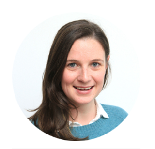

Dr. Annabel Short
by Scott Kiel-Chisholm, 10 Oct 2023

Dr Annabel Short is a Senior Research Fellow at the Telethon Kids Institute. Her research focus is identifying molecular mechanisms promoting vulnerabilities to chronic diseases of the brain. She completed her Bachelor of Medical Research at the University of Tasmania and joined the cancer genetics group at the Menzies Research Institute, Hobart, where she was working to understand how environmental changes to our DNA are associated with tumour development. She then completed her PhD in behavioural and molecular neuroscience at the Florey Institute for Neuroscience and Mental Health at the University of Melbourne, Australia. On completion of her PhD, she was a postdoctoral scholar at the University of California, Irvine where she was investigating how the postnatal environment can influence brain development and the underlying cell programming. Annabel joined the Brain Tumour Research team in 2022 and is using her training to help understand how cellular changes can influence tumorigenesis and the effects on the developing brain.